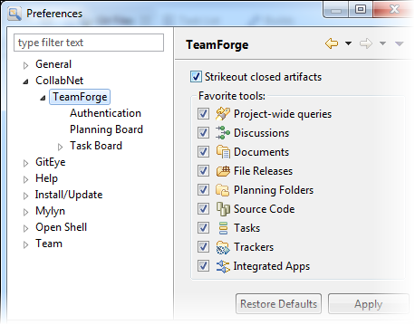
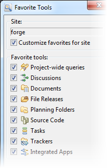
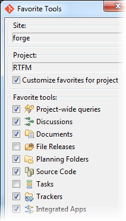

You can choose your favorite TeamForge tools at the site level, project level or across all projects and sites.
-
To see the same tools across all sites and projects, specify them in .

-
To set your favorite tools for a site:
-
In the CollabNet Sites view, right-click a site
and select Favorite Tools.

-
Select the Customize favorites for site option.
-
Select your favorite tools from the list.
-
Click OK.
-
To set your favorite tools for a project:
-
In the CollabNet Sites view, right-click a project
and select Favorite Tools.

-
Select the Customize favorites for project option.
-
Select your favorite tools from the list.
-
Click OK.
-
At the site level, you can see all TeamForge tools or the favorite tools you specified for the site. In the CollabNet
Sites view, right-click the site, select Show, and then the option you want.
-
At the project level, you can see all TeamForge tools, site favorites, project favorites, or TeamForge favorites (defined in Preferences).
In the CollabNet
Sites view, right-click the project, select Show, and then the option you want.
The choices work in a hierarchical manner. For example, if you select , but haven't defined favorite tools at the
project level, your favorite site tools will be displayed; if you haven't defined favorite tools at the site level, your favorite TeamForge tools will be shown.